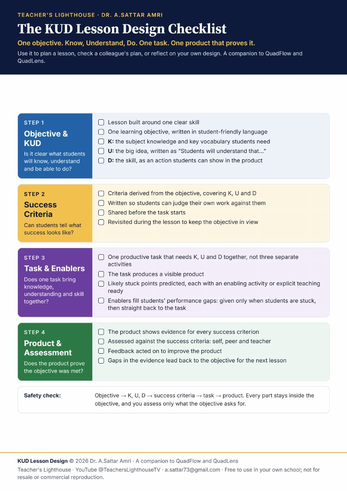

KUD Lesson Design builds every lesson from one learning objective, broken into what students will Know, Understand and be able to Do. One productive task brings them together, and the product proves the learning. A companion to QuadFlow and QuadLens.
Write one learning objective, then break it into K, U and D.
“Students will know…”
Facts. Terms. Key vocabulary.
“Students will understand that…”
The big idea. Gives knowledge meaning.
“Students will be able to…”
The skill. Visible in the product.
Skill → objective → K, U, D → success criteria → productive task → product.
No drifting from the learning objective. A swim barrier for teachers. Planning, teaching and assessment, all inside the objective. Assess only what you set out to teach.

Three free frameworks that work together, from the lesson plan to the lesson observation.
General Director of Al Rawabi Schools, Bahrain, with 30 years in education as a teacher, head of department, school improvement partner and principal. Creator of the QuadLens, QuadFlow and KUD Lesson Design frameworks, author of Task Switching Dynamics, and host of Teacher's Lighthouse on YouTube. View CV →
Training for teachers, coaching for school leaders, and lesson-design support built on KUD, QuadFlow and QuadLens.